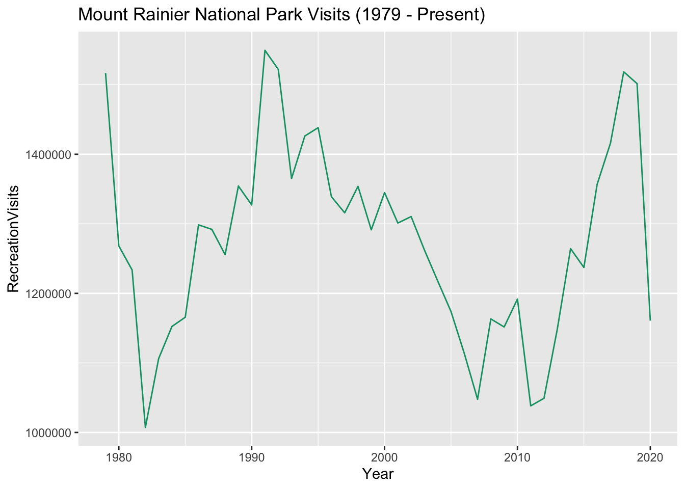

This dataset contains the number of visitors, per year, to each of the parks administered by the United States National Park Service (NPS), from 1979 onwards. It is not collected just for fun – rather, it is regularly used by the NPS to inform policymaking decisions and advocacy for things like the size and distribution of NPS budgets.
Reconstructing how that data is collected, and what decisions are made about its composition, is essential to understanding the information it presents. It’s also surprisingly difficult. In this exploration of the NPS data, then, we will not only step through the dataset, but also the work required to put together how it came to be.
Visits and visitors
If we open the dataset and look at the first few rows, we will find five columns – “ParkName”, “Region”, “State”, “Year”, and “RecreationVisits”:
Code
# Load the dply packagelibrary(dplyr, warn =FALSE)# Load National Park Visitation datanp_data <-read.csv("https://raw.githubusercontent.com/melaniewalsh/Neat-Datasets/main/1979-2020-National-Park-Visits-By-State.csv", stringsAsFactors =FALSE)# Look at the structure of the datasetslice_sample(.data = np_data, n =10)
ParkName
Region
State
Year
RecreationVisits
Kenai Fjords NP
Alaska
AK
2000
254790
Big Bend NP
Intermountain
TX
2009
363905
Hot Springs NP
Midwest
AR
2003
1561311
Zion NP
Intermountain
UT
1989
1998856
Congaree NP
Southeast
SC
1990
23223
Carlsbad Caverns NP
Intermountain
NM
2019
440691
Grand Teton NP
Intermountain
WY
2006
2406476
Sequoia NP
Pacific West
CA
2020
796086
Mammoth Cave NP
Southeast
KY
2004
1888267
Theodore Roosevelt NP
Midwest
ND
1998
448286
The first four are self-explanatory: but why is the fifth labelled “RecreationVisits” rather than “Visits”, or “Visitors”?
The answer is that what this dataset is tracking is more complicated and nuanced than “people who go to NPS properties”. People go to the national parks for a lot of reasons. While many are there for recreation, some travel through the parks, either because a highway runs through or because they live on “inholdings” (private property that is surrounded by a national park on all sides). Because of this, the NPS defines “Recreation Visits” as visits made by people who are not:
using park territory, roads, and facilities for their own convenience or as a part of their occupation. > Reportable non-recreation visits include:
Persons going to and from inholdings across significant parts of park land;
Commuter and other traffic using NPS-administered roads or waterways through a park for their convenience;
Trades-people with business in the park;
Any civilian activity a part of or incidental to the pursuit of a gainful occupation (e.g., guides);
Government personnel (other than NPS employees) with business in the park;
Citizens using NPS buildings for civic or local government business, or attending public hearings;
Outside research activities (visits and overnights) if independent of NPS legislated interests (e.g. meteorological research).
What this means is that the counts leave out a lot of people. This is worth thinking about when we evaluate what the numbers mean, and how the NPS achieves them (which we’ll discuss more below)
Data and data collection
So now we know what is being collected. But let’s try to understand how it’s being collected. We can do this, in part, by exploring and visualising the data.
For example: let’s visualise the visits to Crater Lakes National Park, from 1979 to the present:
Code
# Load the "ggplot2" package (which we'll be using a lot more)library(ggplot2)# Let's also load "ggthemes", which lets us use colorblind-compatible palettes. When we've only got one line, this will just be black.library(ggthemes)# And specify the colorblind palettecb_palette <-colorblind_pal()(8)# Turn off scientific notationoptions(scipen =999)# Filter down to Crater Lake National Parkcrater_lake <- np_data %>%filter(ParkName =="Crater Lake NP")# Visualise itggplot(data = crater_lake) +geom_line(aes(x = Year, y = RecreationVisits), color = cb_palette[1]) +labs(title ="Crater Lake National Park Visits (1979 - Present)")
We see a lot of things in this data - not least of which is a tremendous rise in visitors in the 2010s - but one interesting observation is the sudden drop in visits in 2012. This isn’t caused by fewer people visiting: instead, it has more to do with how visitor numbers are counted.
When it comes to counting visitors, the NPS uses a variety of techniques. At some parks, such as Alcatraz, it is simple: the park is only accessible via (ticketed) boat, and so NPS staff simply count the number of tickets. But other parks may have multiple entrances, and feature visitors arriving via car, bus, or on foot. It quickly becomes impractical to have staff at every entrance, 24 hours a day, just in case someone arrives.
Instead, the NPS uses a variety of techniques - some automated, some manual. These include:
Induction loop counters - magnetised coils of wire under the road that “trip” when a vehicle passes over them;
Traffic counters, which manually increment a…
Extracting data from ticketing machines;
Alongside all of that, NPS rangers do, on many occasions, manually count people who arrive - particularly when one of the usual mechanisms doesn’t count. And that’s exactly what happened here; according to the NPS data logs, the induction loop counter at one of the main entrances simply broke in January, and wasn’t repaired for (at a minimum) several months. You can see a similar, but more severe, example at Carlsbad Caverns National Park, where it appears visits entirely tail off in 2020, as a result of the traffic counter being broken for years:
Code
# Filter down to Carlsbad Caverns National Parkcarlsbad_data <- np_data %>%filter(ParkName =="Carlsbad Caverns NP")# Visualise itggplot(data = carlsbad_data) +geom_line(aes(x = Year, y = RecreationVisits, color = cb_palette[2])) +labs(title ="Carlsbad Caverns National Park Visits (1979 - Present)")
Exercise: thinking about where (and how, and why) mechanisms are likely to break
Devices breaking is inevitable - but as the different scales of the Carlsbad and Crater Lake outages indicate, they get fixed at different rates, in different locations.
Data and reality
Changes in data don’t only stem from changes in data collection, but also the underlying reality of what is being measured. Let’s take a look at the visitor data from Kobuk Valley National Park:
Code
# Filter down to Kobuk Valley National Parkkobuk_data <- np_data %>%filter(ParkName =="Kobuk Valley NP")# Visualise itggplot(data = kobuk_data) +geom_line(aes(x = Year, y = RecreationVisits ), color = cb_palette[3]) +labs(title ="Kobuk Valley National Park Visits (1979 - Present)")
But another question would be: why the drop-off in 2018-19? It’s too early for the cause to be COVID. Instead, the cause is administrative; government shut-downs in that era led to a reduction of funding, and correspondingly the closure of various attractions at the park. The result: a lack of funding leads to a reduced visitor count - a visitor count that is often used, remember, to argue for funding. This highlights one of the ways in which seemingly-descriptive data used to make decisions can represent the state of those decisions, more than some natural “baseline”.
Another kind of issue of “representing reality” can be found if we look at the visitor data for Mount Rainier:
Code
# Filter down to Mount Rainier National Parkrainier_data <- np_data %>%filter(ParkName =="Mount Rainier NP")# Visualise itggplot(data = rainier_data) +geom_line(aes(x = Year, y = RecreationVisits ), color = cb_palette[4]) +labs(title ="Mount Rainier National Park Visits (1979 - Present)")

Once again, we see both a COVID-19 dropoff - but also a continued dropoff beyond that. Looking at the visitation comments explains why; flooding, fires and a blizzard drastically impeded the ability of people to get to the park, and the possibility of areas of the park opening at all.
Exercise: …?
Compensating for data
As all of this should suggest, NPS data is always somewhat approximate. Reductions in funding, damage to counting equipment, natural events, or simply the inevitably-fallible nature of any data collection means that data requires a certain amount of prediction, guesswork and massaging to look complete.
Sometimes this leads to odd-looking decisions. For example: at Assateague Island National Seashore, there are two entrances (one in Maryland, and one in Virginia). At both entrances, they use a traffic counter to count vehicles. At both entrances, they get from vehicles to visitors by multiplying the number of vehicles by an estimate of how many people each vehicle contains. But at the Maryland entrance, that’s 2.9. At the Virginia entrance, it’s 3.2
Exerise: compensating for data outages
What techniques do they use? Go on a scavenger hunt
Data decisions
Some places register `zero’ as a number of visitors in years. Why is this, and where? What is the contextual knowledge involved in parks people declaring it to be a zero?
What are the reasons for doing so? (the limits of computers for data processing/understanding)
Exercise: data decisions
Have them go through public data and try to find proof the counts of 0 are “wrong”
color = d3.scaleLinear().domain([5000000,1000000,100000]).range(["#cafcc2","#fce7c2","#eb9494"])
Code
/*Inputs.table(search, data)*/Inputs.table(search, {layout:"fixed",rows:50,sort:"Year",reverse:true,format: {/*RecreationVisits: x => d3.format('.2s')(x),*/Year: x => d3.timeFormat(x),RecreationVisits: x =>html`<div style='background:${color(x)}'>${d3.format('.2s')(x)}</div>` }})
Source Code
---title: "National Park Visitation Data"date: "2024-02-26"categories: [line-plots, data-collection, uncertainty]image: "https://upload.wikimedia.org/wikipedia/commons/thumb/9/97/Logo_of_the_United_States_National_Park_Service.svg/1200px-Logo_of_the_United_States_National_Park_Service.svg.png"format: htmlcode-fold: trueeditor: visualdf-print: kableR.options: warn: falsecode-tools: true---::: {.panel-tabset}# Data EssayThis dataset contains the number of visitors, per year, to each of the parks administered by the United States National Park Service (NPS), from 1979 onwards. It is not collected just for fun -- rather, it is regularly used by the NPS to inform policymaking decisions and advocacy for things like the size and distribution of NPS budgets.Reconstructing how that data is collected, and what decisions are made about its composition, is essential to understanding the information it presents. It's also surprisingly difficult. In this exploration of the NPS data, then, we will not only step through the dataset, but also the work required to put together how it came to be.## Visits and visitorsIf we open the dataset and look at the first few rows, we will find five columns -- "ParkName", "Region", "State", "Year", and "RecreationVisits":```{r}# Load the dply packagelibrary(dplyr, warn =FALSE)# Load National Park Visitation datanp_data <-read.csv("https://raw.githubusercontent.com/melaniewalsh/Neat-Datasets/main/1979-2020-National-Park-Visits-By-State.csv", stringsAsFactors =FALSE)# Look at the structure of the datasetslice_sample(.data = np_data, n =10)```The first four are self-explanatory: but why is the fifth labelled "RecreationVisits" rather than "Visits", or "Visitors"?The answer is that what this dataset is tracking is more complicated and nuanced than "people who go to NPS properties". People go to the national parks for a lot of reasons. While many are there for recreation, some travel *through* the parks, either because a highway runs through or because they live on "inholdings" (private property that is surrounded by a national park on all sides). Because of this, [the NPS defines](https://www.nps.gov/subjects/socialscience/nps-visitor-use-statistics-definitions.htm) "Recreation Visits" as visits made by people who are *not*:> using park territory, roads, and facilities for their own convenience or as a part of their occupation. > Reportable non-recreation visits include:>> * Persons going to and from inholdings across significant parts of park land;> * Commuter and other traffic using NPS-administered roads or waterways through a park for their convenience;> * Trades-people with business in the park;> * Any civilian activity a part of or incidental to the pursuit of a gainful occupation (e.g., guides);> * Government personnel (other than NPS employees) with business in the park;> * Citizens using NPS buildings for civic or local government business, or attending public hearings;> * Outside research activities (visits and overnights) if independent of NPS legislated interests (e.g. meteorological research).What this means is that the counts leave out a lot of people. This is worth thinking about when we evaluate what the numbers mean, and how the NPS achieves them (which we'll discuss more below)## Data and data collectionSo now we know what is being collected. But let's try to understand *how* it's being collected. We can do this, in part, by exploring and visualising the data.For example: let's visualise the visits to Crater Lakes National Park, from 1979 to the present:```{r}# Load the "ggplot2" package (which we'll be using a lot more)library(ggplot2)# Let's also load "ggthemes", which lets us use colorblind-compatible palettes. When we've only got one line, this will just be black.library(ggthemes)# And specify the colorblind palettecb_palette <-colorblind_pal()(8)# Turn off scientific notationoptions(scipen =999)# Filter down to Crater Lake National Parkcrater_lake <- np_data %>%filter(ParkName =="Crater Lake NP")# Visualise itggplot(data = crater_lake) +geom_line(aes(x = Year, y = RecreationVisits), color = cb_palette[1]) +labs(title ="Crater Lake National Park Visits (1979 - Present)")```We see a lot of things in this data - not least of which is a tremendous rise in visitors in the 2010s - but one interesting observation is the sudden drop in visits in 2012. This isn't caused by fewer people visiting: instead, it has more to do with how visitor numbers are counted.When it comes to counting visitors, the NPS uses a variety of techniques. At some parks, such as Alcatraz, it is simple: the park is only accessible via (ticketed) boat, and so NPS staff simply count the number of tickets. But other parks may have multiple entrances, and feature visitors arriving via car, bus, or on foot. It quickly becomes impractical to have staff at every entrance, 24 hours a day, just in case someone arrives.Instead, the NPS uses a variety of techniques - some automated, some manual. These include:* Induction loop counters - magnetised coils of wire under the road that "trip" when a vehicle passes over them;* Traffic counters, which manually increment a...* Extracting data from ticketing machines;Alongside all of that, NPS rangers do, on many occasions, manually count people who arrive - particularly when one of the usual mechanisms doesn't count. And that's exactly what happened here; [according to the NPS data logs](https://irma.nps.gov/Stats/SSRSReports/Park%20Specific%20Reports/Monthly%20Visitation%20Comments%20By%20Park?Park=CRLA), the induction loop counter at one of the main entrances simply broke in January, and wasn't repaired for (at a minimum) several months. You can see a similar, but more severe, example at Carlsbad Caverns National Park, where it appears visits entirely tail off in 2020, as a result of [the traffic counter being broken](https://irma.nps.gov/Stats/SSRSReports/Park%20Specific%20Reports/Monthly%20Visitation%20Comments%20By%20Park?Park=CRLA) for *years*:```{r}# Filter down to Carlsbad Caverns National Parkcarlsbad_data <- np_data %>%filter(ParkName =="Carlsbad Caverns NP")# Visualise itggplot(data = carlsbad_data) +geom_line(aes(x = Year, y = RecreationVisits, color = cb_palette[2])) +labs(title ="Carlsbad Caverns National Park Visits (1979 - Present)")```## Exercise: thinking about where (and how, and why) mechanisms are likely to breakDevices breaking is inevitable - but as the different scales of the Carlsbad and Crater Lake outages indicate, they get *fixed* at different rates, in different locations.## Data and realityChanges in data don't only stem from changes in data collection, but also the underlying reality of what is being measured. Let's take a look at the visitor data from Kobuk Valley National Park:```{r}# Filter down to Kobuk Valley National Parkkobuk_data <- np_data %>%filter(ParkName =="Kobuk Valley NP")# Visualise itggplot(data = kobuk_data) +geom_line(aes(x = Year, y = RecreationVisits ), color = cb_palette[3]) +labs(title ="Kobuk Valley National Park Visits (1979 - Present)")```Most people's eyes will immediately be drawn to the drastic drop in 2014-15, and for good reason! But the cause is familiar: it's about data collection. As the park report notes, "[https://irma.nps.gov/Stats/SSRSReports/Park%20Specific%20Reports/Monthly%20Visitation%20Comments%20By%20Park?Park=MORA](The park is developing a new counting system and has made the decision not to report visitor counts until the new system is in place.)".But another question would be: why the drop-off in 2018-19? It's too early for the cause to be COVID. Instead, the cause is administrative; government shut-downs in that era led to a reduction of funding, and correspondingly the closure of various attractions at the park. The result: a lack of funding leads to a reduced visitor count - a visitor count that is often used, remember, to *argue for funding*. This highlights one of the ways in which seemingly-descriptive data used to make decisions can represent the state of those decisions, more than some natural "baseline".Another kind of issue of "representing reality" can be found if we look at the visitor data for Mount Rainier:```{r}# Filter down to Mount Rainier National Parkrainier_data <- np_data %>%filter(ParkName =="Mount Rainier NP")# Visualise itggplot(data = rainier_data) +geom_line(aes(x = Year, y = RecreationVisits ), color = cb_palette[4]) +labs(title ="Mount Rainier National Park Visits (1979 - Present)")```Once again, we see both a COVID-19 dropoff - but also a continued dropoff beyond that. [Looking at the visitation comments](https://irma.nps.gov/Stats/SSRSReports/Park%20Specific%20Reports/Monthly%20Visitation%20Comments%20By%20Park?Park=MORA) explains why; flooding, fires and a blizzard drastically impeded the ability of people to get to the park, and the possibility of areas of the park opening at all.## Exercise: ...?## Compensating for dataAs all of this should suggest, NPS data is always somewhat approximate. Reductions in funding, damage to counting equipment, natural events, or simply the inevitably-fallible nature of *any* data collection means that data requires a certain amount of prediction, guesswork and massaging to look complete.Sometimes this leads to odd-looking decisions. For example: at Assateague Island National Seashore, there are two entrances (one in Maryland, and one in Virginia). At both entrances, they use a traffic counter to count vehicles. At both entrances, they get from vehicles to visitors by multiplying the number of vehicles by an estimate of how many people each vehicle contains. But at the Maryland entrance, that's 2.9. At the Virginia entrance, it's 3.2## Exerise: compensating for data outagesWhat techniques do they use? Go on a scavenger hunt## Data decisionsSome places register `zero' as a number of visitors in years. Why is this, and where? What is the contextual knowledge involved in parks people declaring it to be a zero?What are the reasons for doing so? (the limits of computers for data processing/understanding)## Exercise: data decisionsHave them go through public data and try to find proof the counts of 0 are "wrong"# Data``` {ojs}//| echo: falseviewof search = Inputs.search(data, { placeholder: "Search"})``````{ojs}//| echo: false//| output: falsedata = d3.csv("https://raw.githubusercontent.com/melaniewalsh/Neat-Datasets/main/1979-2022-National-Park-Visits-By-State.csv", d3.autoType)``````{ojs}//| echo: false//| output: falsefiltered = data.filter(function(penguin) { return bill_length_min < penguin.bill_length_mm && islands.includes(penguin.island);})``````{ojs}//| echo: falsecolor = d3 .scaleLinear() .domain([5000000, 1000000, 100000]) .range(["#cafcc2", "#fce7c2", "#eb9494"])``````{ojs}//| echo: false/*Inputs.table(search, data)*/Inputs.table(search, { layout: "fixed", rows: 50, sort: "Year", reverse: true, format: { /*RecreationVisits: x => d3.format('.2s')(x),*/ Year: x => d3.timeFormat(x), RecreationVisits: x => html`<div style='background:${color(x)}'>${d3.format('.2s')(x)}</div>` }})```# Exercises# Discussion & Activities:::